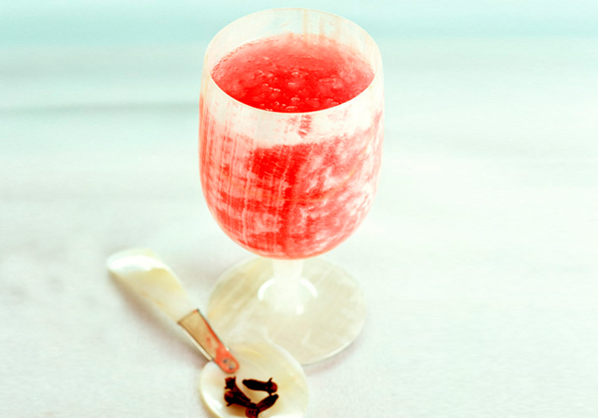
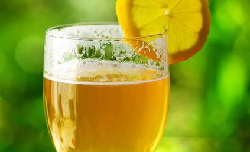
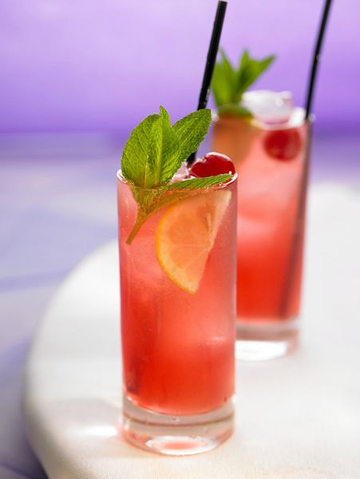
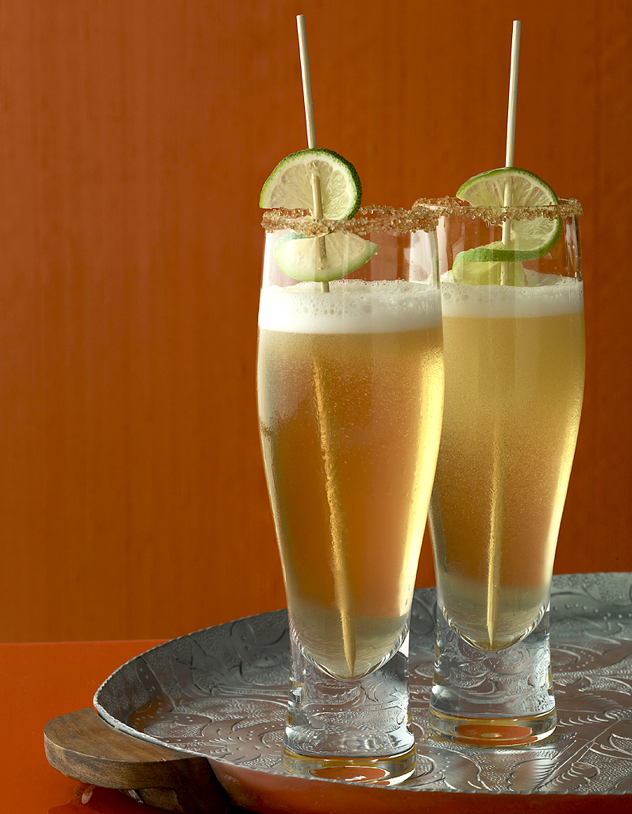
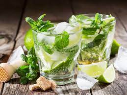
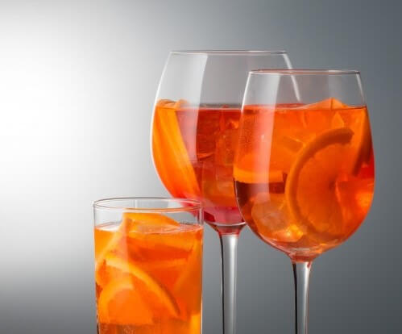
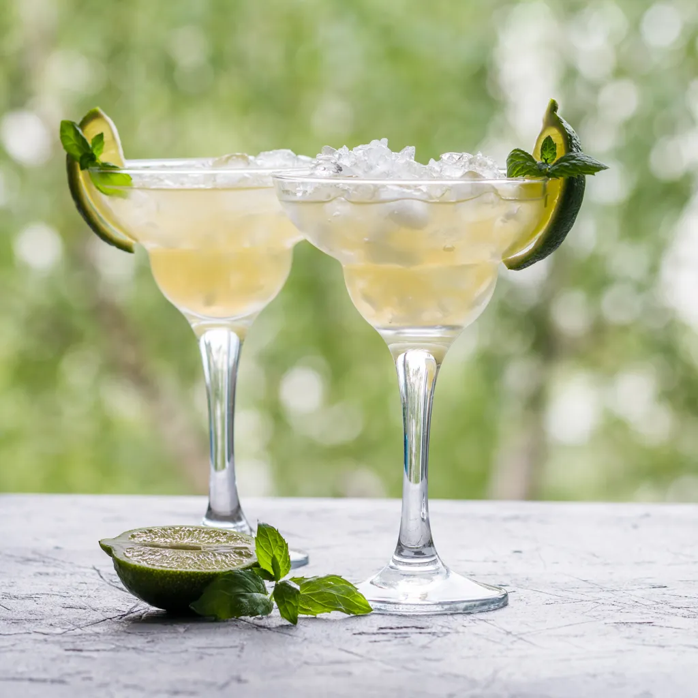

Vous devez rentrer ce que vous avez chez vous et nous vous proposons des recetttes
Type d'alcool :
Vodka
Vodka
Vodka
Vodka
Vodka
Vodka
Découvertes
Nous vous proposons une large gamme de recette
Les Classiques
Les Exotiques
Les Cocktails
Les Shooters
Les classiques
Buttery Nipple
Ce shooter s’adresse aux personnes qui aiment les boissons sucrées ! Versez 1/2 shooter de schnaps au caramel dans un verre à shooter et ajoutez la même quantité de crème irlandaise.
Ingredients :
1/2 shooter de schnaps au caramel
1/2 shooter de crème irlandaise
Peanut Butter & jelly
Original et rafraîchissant, le Peanut Butter and Jelly est un shooter où les ingrédients sont agités avec les glaçons avant d’être servis dans un verre froid.
Ingredients :
30 ml de Frangelico
30 ml de liqueur de framboise
15 ml de butterscotch schnaps
Melon Ball
Dans un verre à shooter, déposez quelques glaçons et versez tous les ingrédients. Mélangez et garnissez de feuilles de menthe.
Ingredients :
10 ml de liqueur de melon
10 ml de jus d’ananas
10 ml de vodka
Washington Apple
À la fois doux et acidulé, le Washington Apple se savoure ! Dans un shaker, versez le whisky canadien, la liqueur de pomme acide et le jus de cranberry. Ajoutez de la glace pilée et agitez.
Ingredients :
30 ml de Whiskey canadien
30 ml de liqueur de pomme acide
30 ml de jus de cranberry
Nutty Irishman
Cocktail très populaire, le Nutty Irshman est un mélange de Baileys et Frangelico. Certains ajoutent un trait de whisky irlandais ou l’agrémentent de café chaud, mais la clé de ce cocktail gagnant réside dans ses notes de noisettes !
Ingredients :
1/2 liqueur de noisette Frangelico
1/2 liqueur de crème irlandaise
A base de biere
Cocktail Monaco
Ce shooter s’adresse aux personnes qui aiment les boissons sucrées ! Versez 1/2 shooter de schnaps au caramel dans un verre à shooter et ajoutez la même quantité de crème irlandaise.

Ingredients :
1/2 shooter de schnaps au caramel
1/2 shooter de crème irlandaise
Cocktail Delirium
Original et rafraîchissant, le Peanut Butter and Jelly est un shooter où les ingrédients sont agités avec les glaçons avant d’être servis dans un verre froid.

Ingredients :
30 ml de Frangelico
30 ml de liqueur de framboise
15 ml de butterscotch schnaps
Cocktail pelco
Dans un verre à shooter, déposez quelques glaçons et versez tous les ingrédients. Mélangez et garnissez de feuilles de menthe.

Ingredients :
10 ml de liqueur de melon
10 ml de jus d’ananas
10 ml de vodka
Cocktail à la bière et au citron vert
À la fois doux et acidulé, le Washington Apple se savoure ! Dans un shaker, versez le whisky canadien, la liqueur de pomme acide et le jus de cranberry. Ajoutez de la glace pilée et agitez.

Ingredients :
30 ml de Whiskey canadien
30 ml de liqueur de pomme acide
30 ml de jus de cranberry
Cocktail ginger beer
Cocktail très populaire, le Nutty Irshman est un mélange de Baileys et Frangelico. Certains ajoutent un trait de whisky irlandais ou l’agrémentent de café chaud, mais la clé de ce cocktail gagnant réside dans ses notes de noisettes !
Ingredients :
1/2 liqueur de noisette Frangelico
1/2 liqueur de crème irlandaise
Les Classiques
Mojito
Le mojito est un cocktail traditionnel de la cuisine cubaine et de la culture de Cuba, à base de rhum, de soda, de citron vert, et de feuilles de menthe fraîche.

Ingredients :
2 cl de rhum blanc
3 feuilles de menthe
0,5L eau gazeuse
1 cl de sirop de sucre de canne
0,5 citron vert
5 glaçons
Le conseil du chef :
Utilise de préférence du jus de citron vert frais (pressé). Bien que la recette originale ne contienne pas d'angostura, vous pouvez y ajouter quelques gouttes afin de le rendre un peu plus sec.
Aperol Spritz
Le spritz est un cocktail alcoolisé largement consommé en apéritif dans les grandes villes de la Vénétie et du Frioul-Vénétie Julienne, et également répandu dans toute l'Italie.

Ingredients :
2 cl d'eau gazeuse
5 cl de vin blanc
3 cl d'Aperol
Le conseil du chef :
Utilisez de préférence du vin blanc sec.
Pina colada
La piña colada est un cocktail officiel de l'IBA, à base de rhum, jus d'ananas et crème de noix de coco, originaire de l’île de Porto Rico des grandes Antilles de la mer des Caraïbes, dont elle est déclarée boisson nationale depuis 1978.
Ingredients :
4 cl de rhum blanc
2 cl de rhum ambré
12 cl de jus d'ananas
4 cl de lait de coco
Le conseil du chef :
Vous pouvez ajouter une touche d'onctuosité en ajoutant une cuillère à soupe de crème fraîche dans le mixer.
Margarita
La Margarita est un cocktail à base de tequila, inventé par des Américains au Mexique. C'est un before lunch qui serait une version du cocktail daisy (« margarita » en espagnol) dans lequel le brandy est remplacé par de la tequila durant la prohibition, période où les Américains ouvrirent des bars au Mexique et au Canada dans les zones frontalières.

Ingredients :
5 cl de tequila
3 cl de triple sec
2 cl de jus de citron vert
Le conseil du chef :
Vous pouvez mettre les verres au réfrigirateur avant de servir le cocktail
Sex on the beach
La Margarita est un cocktail à base de tequila, inventé par des Américains au Mexique. C'est un before lunch qui serait une version du cocktail daisy (« margarita » en espagnol) dans lequel le brandy est remplacé par de la tequila durant la prohibition, période où les Américains ouvrirent des bars au Mexique et au Canada dans les zones frontalières.